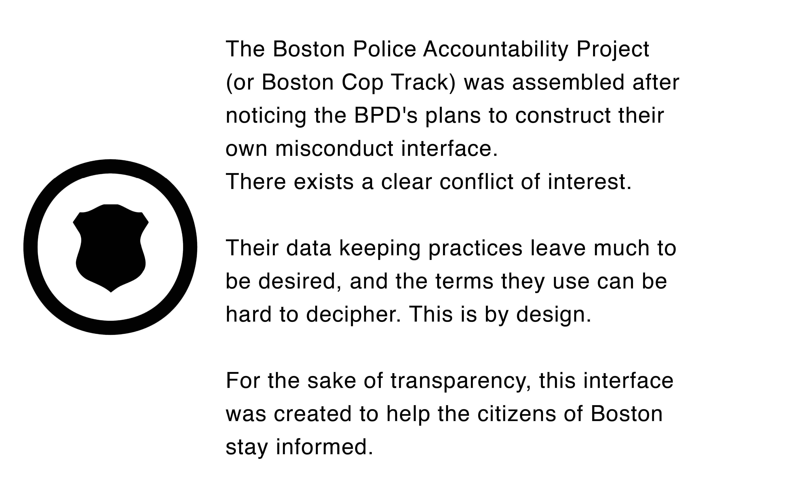

Run a search.
Look up a Boston Police Department employee to see their misconduct history

About
Definitions
Neglect of Duty/Unreasonable Judgment
This includes any condcut or omission which is not in accordance with established and ordinary duties or procedures as to such employees or which constitutes use of unreasonable judgment in the exercising of any discretion granted to an employee. [Rule 102 Section 04]Respectful Treatment
Employees shall, on all occasions, be civil and respectful, curteous and considerate toward their supervisors, their subordinates and all other members of the Department and the general public. No employee shall use epithets or terms that tend to denigrate any person(s) due to their race, color, creed, gender identity or sexual orientation except when necessary in police reports or in testimony. [Rule 102 Section 09]Use of Force
Force is defined by the BPD as "the amount of physical effort, however slight, required by police to compel compliance by an unwilling individual." This definition has since become a lot more complex.Conduct Unbecoming
Employees shall condcut themselves at all times, both on and off duty in such a manner as to reflect most favorably on the Department. Condcut unbecoming an employee shall include that which tends to indicate that the employee is unable or unfit to continue as a member of the Department, or tends to impair the operation of the Department or its employees. [Rule 102 Section 03]Finding: Sustained
Sufficient evidence supports the complainant's allegations. The offending officer is subject to disciplinary action.Finding: Not Sustained
Investigation failed to prove or disprove the allegations.Finding: Exonerated
Complained of action did occur - however action was reasonable, proper and legal.Finding: Unfounded
Investiation reveals complained of action did not occur.- Resources
- Bail Funds
- Black Lives Matter
- Lawyers
- Bpdnews.com
- Download statistics and infographics
- Your Rights
- An officer has arrested you
- You're recording an officer
- An officer pulls you over
- You've been stopped by an officer